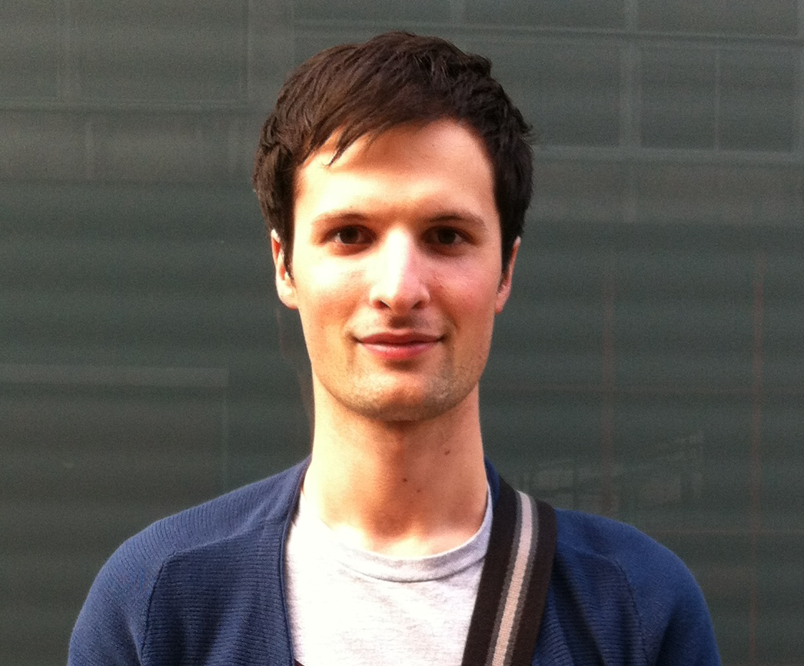

Room 345
Dept. of Computing
Imperial College London
180 Queen’s Gate
London SW7 2AZ, UK
kevin.keraudren10@imperial.ac.uk

|  |
Contact: Room 345 Dept. of Computing Imperial College London 180 Queen’s Gate London SW7 2AZ, UK kevin.keraudren10@imperial.ac.uk
|